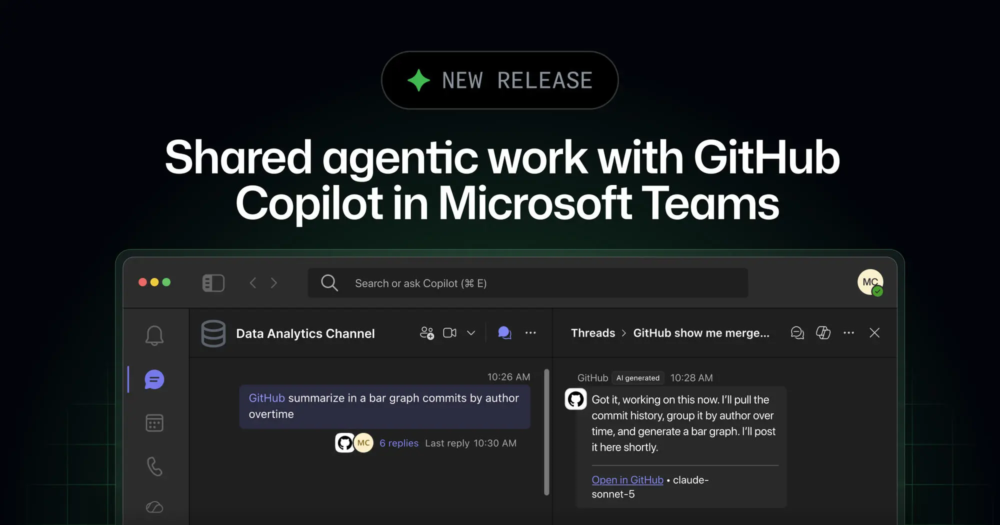
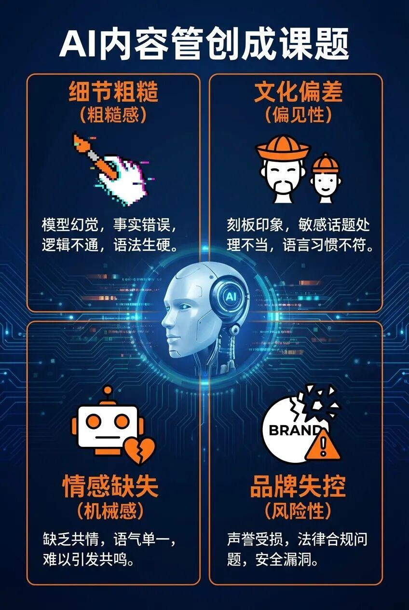
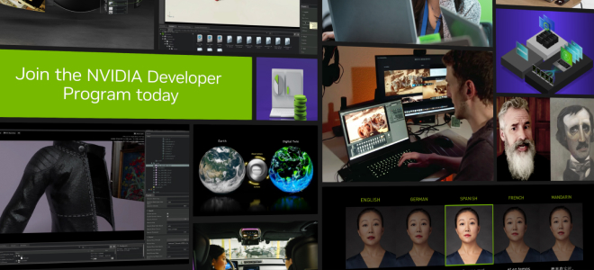
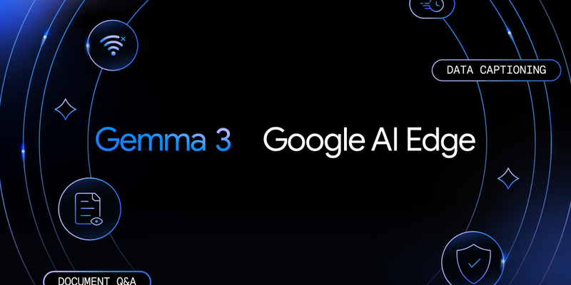
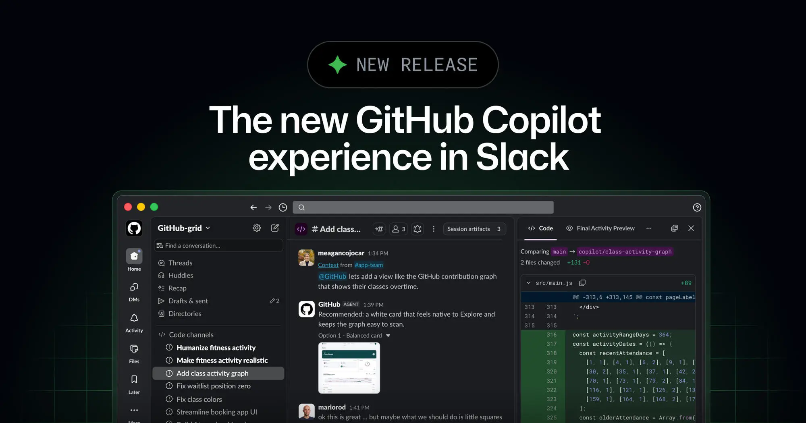
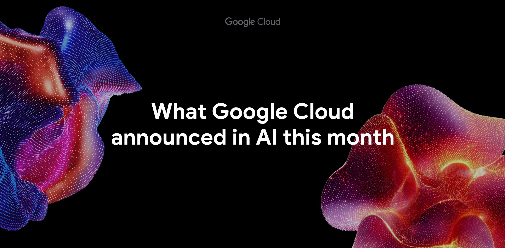
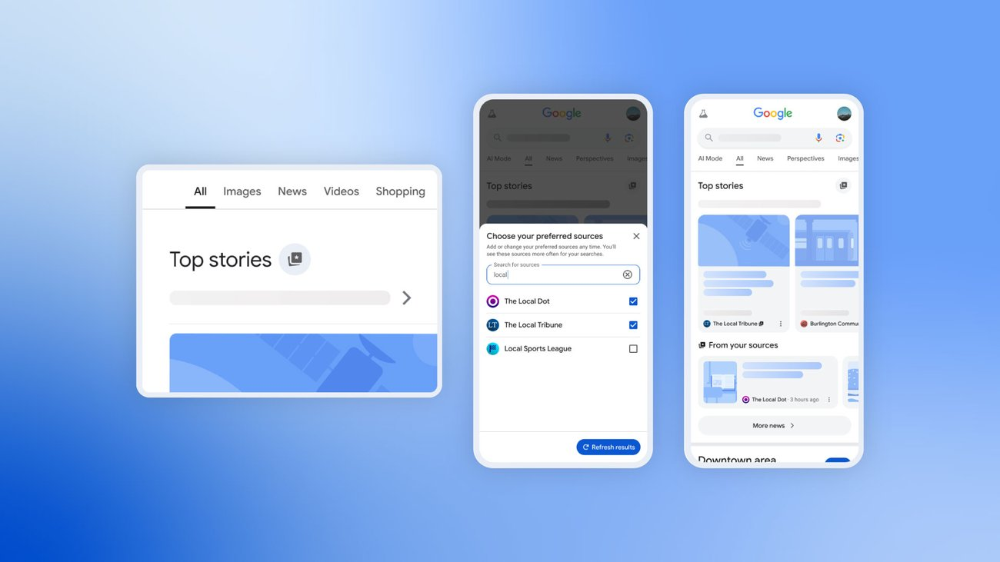

2026-08-22
VOL 326
读者，早。
另一边，钱和信任没有跟着变轻。Apple 继续调整 AI 团队，创作者因为接 AI 赞助被观众反噬，Starcloud、Twin1 和数据中心报道都在说同一件俗事：AI 的能力可以包装成魔法，但最后要结算成工资、广告信誉、GPU 租约、电力容量和资本成本。

OpenAI 8 月 21 日上线 GPT-5.6 Sol，并把价格压到每百万输入 tokens 0.05 美元、输出 tokens 0.5 美元，同时保留 128K context window 和结构化输出、工具调用等 API 能力。OpenAI 把它定位成高性价比生产模型，不是旗舰秀肌肉；这等于把一部分常规 agent、客服、摘要和批处理任务从“能不能跑”推向“敢不敢大规模跑”。

GitHub 8 月 21 日宣布，GitHub Copilot 的 shared agentic work 进入 Microsoft Teams。团队可以在 Teams 里把 issue、pull request、计划和讨论交给 Copilot 处理，并把进展带回协作流。GitHub 的重点不是再做一个聊天框，而是让 agent 出现在团队已经开会、分工和追进度的地方。
CNBC 8 月 21 日报道，Apple 在 Siri、Vision Pro 和 AI 相关团队裁撤约 200 个岗位。报道把这次调整放在 Apple Intelligence 推进不顺、Siri 重构延迟和硬件团队资源重排的背景下看。Apple 没有把它包装成技术胜利，信号更像内部优先级重新排队。

The Verge 8 月 21 日追踪 YouTube 创作者与 AI 产品赞助的冲突：一批创作者接 AI 写作、剪辑或自动化工具广告后，被观众质疑“卖掉创作伦理”。平台和广告主看中的是转化率，创作者承担的却是信任折损，尤其当产品宣传和真实能力之间存在落差时，评论区会直接把账算到人身上。

Google 8 月 21 日向更多用户开放 Preferred Sources。用户可以在 Search 里指定自己更想看到的媒体或网站，Google 会在 Top Stories 等区域优先展示这些来源。这个功能出现在 AI Overviews 挤压发行方流量的大背景下，Google 的解释是让用户控制来源偏好，但它同时也把媒体分发权更深地锁进 Google 界面。

NVIDIA 8 月 21 日展示 automatic variation operators，简称 AVO，用外部 harness 自动生成任务变体、筛选策略并驱动模型在 ARC-AGI-3 类任务上提升表现。TechCrunch 的解读也指出，亮点不只是模型本体，而是围绕模型的搜索、变体、评估和执行系统正在变成能力来源。

Google 8 月 21 日称，开源权重模型家族 Gemma 的下载量已经超过 10 亿。Gemma 从小尺寸本地部署、教育实验、研究复现到企业微调都有使用场景，Google 同时把它和 Gemini 的闭源能力区分开：一个负责广泛分发，一个负责旗舰产品。

GitHub 同日还宣布新的 GitHub Copilot Slack experience。开发者可以在 Slack 里查看、触发和协作处理 Copilot 相关工作，把代码上下文和团队讨论放到同一个沟通场景里。和 Teams 版本相比，Slack 版本更像面向开发团队日常沟通的轻入口。

OpenAI 8 月 21 日上线 AI Futures 研究与讨论入口，集中呈现对长期 AI 影响、治理、劳动力和社会适应的材料。它不是一个新模型，而是把公司对未来风险和制度安排的论述放到更前台的位置，和近期企业安全、隐私处理、模型发布节奏一起看，OpenAI 正在补叙事层的信用。
TechCrunch 8 月 21 日把 NVIDIA 的 AVO 演示概括成一个更大的变化：AI 成绩越来越依赖模型周围的 harness。也就是任务生成、搜索策略、验证器、工具调用和反馈循环。模型参数仍然重要，但真实系统里，谁能把外部流程组织好，谁就能把同一模型榨出完全不同的表现。
The Verge 的创作者报道里，最刺眼的不是观众骂声，而是赞助链条的重新定价。AI 公司需要可信的人解释产品，观众又担心创作者把自己曾经反对的自动化工具卖给粉丝。广告、创作和身份表达在同一个频道里相撞，传统口播合同没有准备好处理这种冲突。

Google Cloud 8 月 21 日发布全栈 AI 说明，强调从基础设施、模型、数据平台到应用层的整合。文章本身是产品叙事，但它反映了云厂商争夺企业 AI 预算的核心方式：不只卖模型，也卖训练、推理、数据治理、观测和部署路径。
GitHub 8 月 21 日发布事故复盘，解释近期服务异常与容量、依赖和流量模式有关。放在 Copilot 进入 Teams、Slack 的同一天看，这不是小插曲：当代码托管、协作消息和 agentic work 都压到 GitHub 生态里，基础服务的稳定性就不再只是开发者体验，而是企业自动化链条的单点风险。
Reuters 8 月 21 日报道，AI 数据中心初创公司 Starcloud 完成 5000 万美元融资，用于推进把数据中心能力送入太空的计划。它押注太阳能和轨道散热可以缓解地面电力、土地和冷却压力，但商业化还要面对发射成本、维护、网络延迟和监管审批。
TechStartups 8 月 21 日报道，Twin1 完成 2000 万美元融资，主打用 AI 建立生物变化相关数字孪生。公司想把复杂生命科学实验变成可模拟、可预测、可迭代的系统，但这类产品的门槛不在演示，而在数据质量、验证周期和监管接受度。

Axios 8 月 21 日报道，AI 数据中心投资热度和部分地方社区的真实感受正在脱节。企业宣布巨额资本开支、就业和基础设施承诺，地方则担心电价、水资源、土地使用和长期税收回报。AI 基建从技术新闻变成城市治理议题，冲突会越来越具体。

Google Search 的 Preferred Sources 可以让用户在新闻相关搜索里选择偏好的媒体来源，之后 Top Stories 等区域会更常展示这些站点。对重度信息工作者来说，它不是万能反算法按钮，但可以把固定可信源放回更靠前的位置，尤其适合跟踪 AI 公司公告、监管机构、研究机构和少数长期可靠媒体。
使用建议：把官方博客、一手研究机构、可靠行业媒体分开建清单；遇到 AI Overviews 给出的答案，先看 Preferred Sources 里有没有原文，再决定是否引用。
Janet 锐评：这个工具不酷，胜在能用。信息流现在最大的问题是答案太顺滑，顺滑到你忘了问来源。Preferred Sources 至少能拿回一点主动权，虽然钥匙仍挂在 Google 门上。